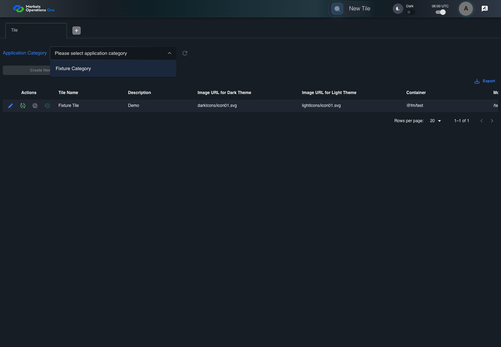

UI-ADM-SEL-003 actual administration UI with step evidence
PASS · application/run-050/ui-adm-sel-003-actual-administration-ui-with-step-evidence-86e7460a5b4a-attempt-1 · ACTUAL_APPLICATION_LOCAL_SERVICES
Actual current React administration screens. Controlled browser login supplies UI-ADMIN-01 and TEST_OWNER, or the declared SUPER_USER. Controlled BFF routes return the case-declared records. Other controlled saves persist submitted field values. This run establishes frontend handling only. It does not execute BFF validation, storage, audit generation, or authorization.
2026-10-22T06:00:41.707Z to 2026-10-22T06:00:44.316Z
Assertions and result · Artifact manifest · Exact run inputs and source hashes
Result SHA-256:7c79814461ee1a403451edd5c4a6531b20cccc58cbf666734c78037d1d809481Machine observations
- ui-origin-admin-requests.json
fc2e879647ba79d2e93896dfac29d3100d7863b61ecaa452958de58916fbbf85
Screenshot capture: CAPTURED. Named frames: 6.
Step screenshot bindings: COMPLETE. 5/5 canonical steps have execution screenshots.
Bindings measure structural coverage only. They do not establish screenshot content quality or relevance.
Screenshot content review: NOT_REVIEWED. Recorded context: 0/6 frames. Identical image bytes: 0 repeated frames. Recorded context does not establish human visual review.
Canonical step timeline
Given Admin A is authenticated as fixture UI-ADMIN-01 with the case-specific permissions
Execution: PASSED.
1. step-01 Visible state after step 1: Given Admin A is authenticated as fixture UI-ADMIN-01 with the case-specific permissions
2026-10-22T06:00:42.894Z · 1440×1000
Step: /Users/lushevol/code/github/ratan-release-impact/workbench/tasks/ui-test-coverage-20261022/test-cases.md:9424
SHA-256:5b18e61c9d4c5c1f0cee1300bdcda34b1418a25c1a97509d35e55f2dac5d5abcAnd category response contains only Fixture Category
Execution: PASSED.
2. step-02 Visible state after step 2: And category response contains only Fixture Category
2026-10-22T06:00:43.766Z · 1440×1000
Step: /Users/lushevol/code/github/ratan-release-impact/workbench/tasks/ui-test-coverage-20261022/test-cases.md:9425
SHA-256:7cc54edcafd56d6eed0d9a047468c929dcc6536721dbd256bb1fb9d4d69499d4When Admin A opens combobox named "Application Category" inside the "Tile" administration tabpanel
Execution: PASSED.
3. step-03 Visible state after step 3: When Admin A opens combobox named "Application Category" inside the "Tile" administration tabpanel
2026-10-22T06:00:43.866Z · 1440×1000
Step: /Users/lushevol/code/github/ratan-release-impact/workbench/tasks/ui-test-coverage-20261022/test-cases.md:9426
SHA-256:5f0cdb6649e15ac95438106dde88a78060d32e26fe629035b80210cbf237c823Then option named "Fixture Category" inside the popup for the Application Category combobox in the Tile administration tabpanel is visible
Execution: PASSED.4. step-04 Visible state after step 4: Then option named "Fixture Category" inside the popup for the Application Category combobox in the Tile administration tabpanel is visible
2026-10-22T06:00:43.916Z · 1440×1000
Step: /Users/lushevol/code/github/ratan-release-impact/workbench/tasks/ui-test-coverage-20261022/test-cases.md:9427
SHA-256:d8c9d5941d9a333ead26afe2f73b7b419feb834028f0f91ca0cc98087ed78aa3And option named "All" inside the popup for the Application Category combobox in the Tile administration tabpanel is absent
Execution: PASSED.5. step-05 Visible state after step 5: And option named "All" inside the popup for the Application Category combobox in the Tile administration tabpanel is absent
2026-10-22T06:00:43.965Z · 1440×1000
Step: /Users/lushevol/code/github/ratan-release-impact/workbench/tasks/ui-test-coverage-20261022/test-cases.md:9428
SHA-256:a3a598c1f8c9f74f9e74558cac75748372890b668c90d3502c6652ad97ac77fa
Additional named frames
Screenshots establish visible state only. Assertions and traces support functional claims.